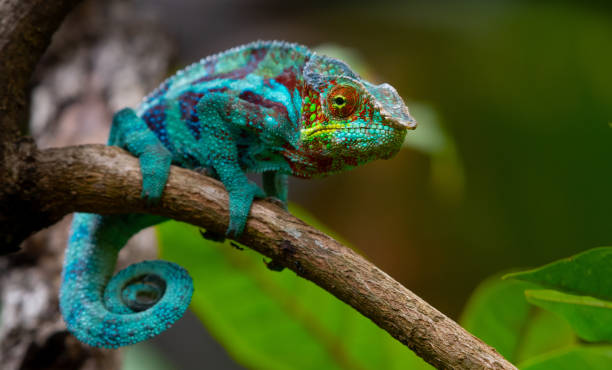
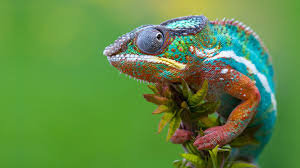
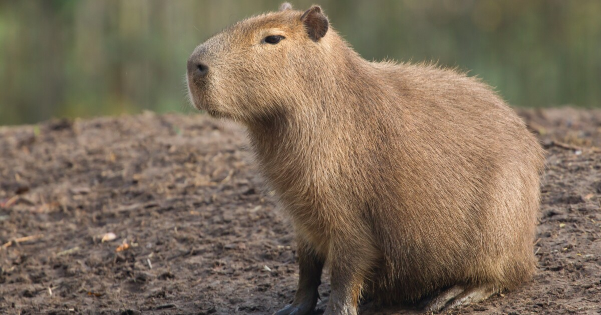
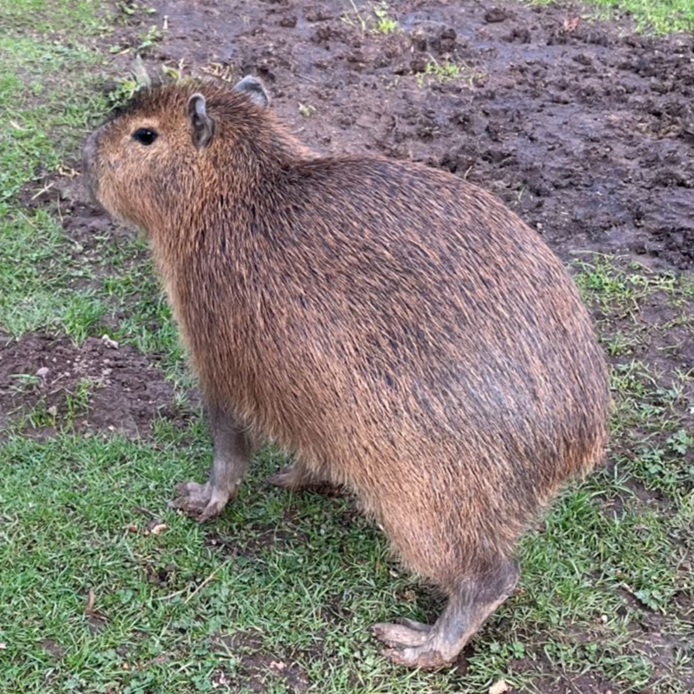
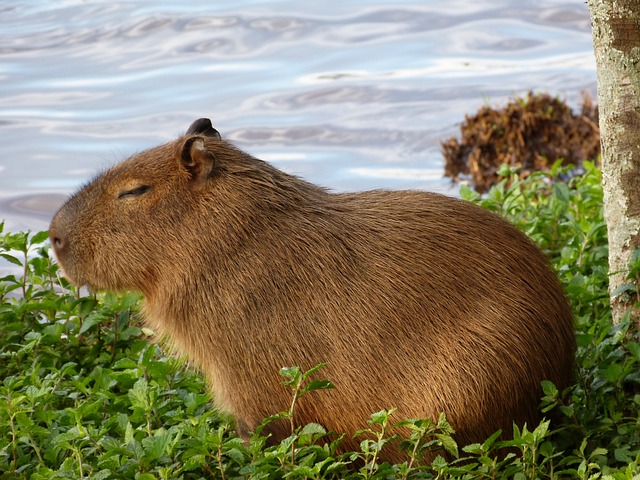
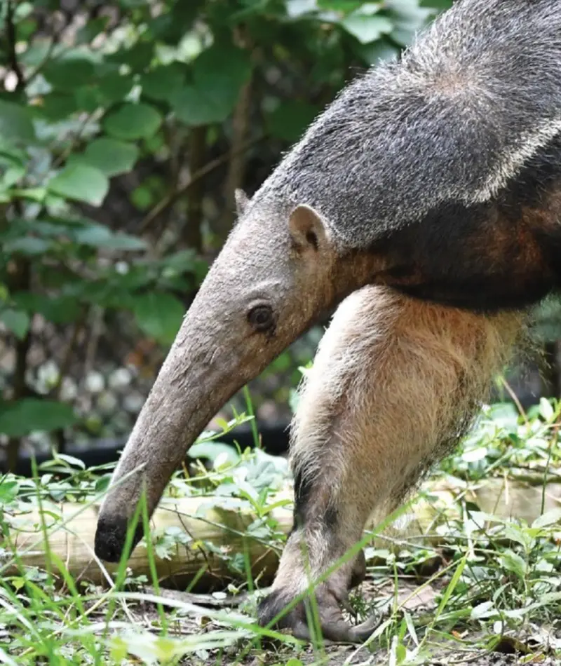
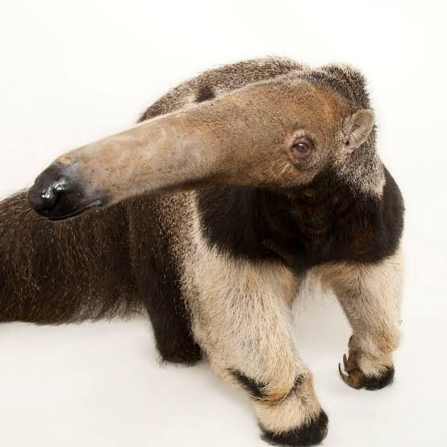

Adapt
 
Chameleons adapt by changing the color of their skin to hide from predators
 
Bit of a stretch but capybara adapted from being angry to friendly because they have no natural predators.
 
Anteaters adapt by having those long snouts and mouths